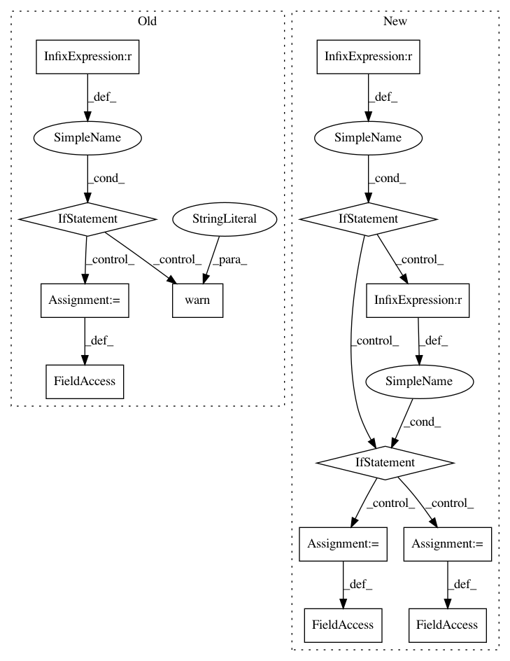

adc9409fc29d36bf952a9562805797a0d4d754cd,tensorpack/utils/serialize.py,,,#,69
Before Change
// https://github.com/apache/arrow/pull/2329
// https://groups.google.com/a/tensorflow.org/forum///!topic/developers/TMqRaT-H2bI
// So we use msgpack as default.
if os.environ.get("TENSORPACK_SERIALIZE", "msgpack") == "pyarrow":
try:
import pyarrow as pa
except ImportError:
loads_pyarrow = create_dummy_func("loads_pyarrow", ["pyarrow"]) // noqa
dumps_pyarrow = create_dummy_func("dumps_pyarrow", ["pyarrow"]) // noqa
if "horovod" in sys.modules:
logger.warn("Horovod and pyarrow may have symbol conflicts. "
"Uninstall pyarrow and use msgpack instead.")
loads = loads_pyarrow
dumps = dumps_pyarrow
else:
loads = loads_msgpack
dumps = dumps_msgpack
class NonPicklableWrapper(object):
TODO
After Change
_DEFAULT_S = os.environ.get("TENSORPACK_SERIALIZE", "msgpack")
if _DEFAULT_S == "pyarrow":
dumps = PyarrowSerializer.dumps_bytes
loads = PyarrowSerializer.loads
elif _DEFAULT_S == "pickle":
dumps = PickleSerializer.dumps
loads = PickleSerializer.loads
else:
dumps = MsgpackSerializer.dumps
loads = MsgpackSerializer.loads
In pattern: SUPERPATTERN
Frequency: 3
Non-data size: 13
Instances
Project Name: tensorpack/tensorpack
Commit Name: adc9409fc29d36bf952a9562805797a0d4d754cd
Time: 2019-09-07
Author: ppwwyyxx@users.noreply.github.com
File Name: tensorpack/utils/serialize.py
Class Name:
Method Name:
Project Name: pymc-devs/pymc3
Commit Name: d15d9ad19021a8a3f26a86fbc6b71838ac37e7d1
Time: 2017-03-30
Author: jonathan.h.friedman@gmail.com
File Name: pymc3/distributions/multivariate.py
Class Name: MvNormal
Method Name: __init__
Project Name: scikit-learn-contrib/DESlib
Commit Name: ec396411be11d514a44a18813278f3a41c73ac5f
Time: 2018-09-23
Author: Natlem@users.noreply.github.com
File Name: deslib/des/meta_des.py
Class Name: METADES
Method Name: __init__